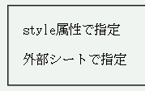
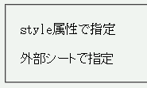

外部スタイルシートでフォント名などに使われた2バイト文字を解釈しない。
外部スタイルシート：
p.sample {
font-family: 'ＭＳ 明朝', sans-serif;
}
<p style="font-family:'ＭＳ 明朝',sans-serif;">style属性で指定</p> <p class="sample">外部シートで指定</p>
style属性で指定
外部シートで指定
どちらも「ＭＳ 明朝」か、既定のサンセリフフォントで表示されます。
WinIE6.0での表示
Opera6.01での表示
Opera6.01では、@charset宣言で文字コードを指定してもこのバグは回避できません。
Opera7.0では、@charset宣言で指定しなければフォント名が解釈されません。
Opera6.04では改善され、上の例示の場合でも「ＭＳ 明朝」で表示されます。Opera7.0では標準・互換モードともに、@charset省略時にこの現象が発生します。